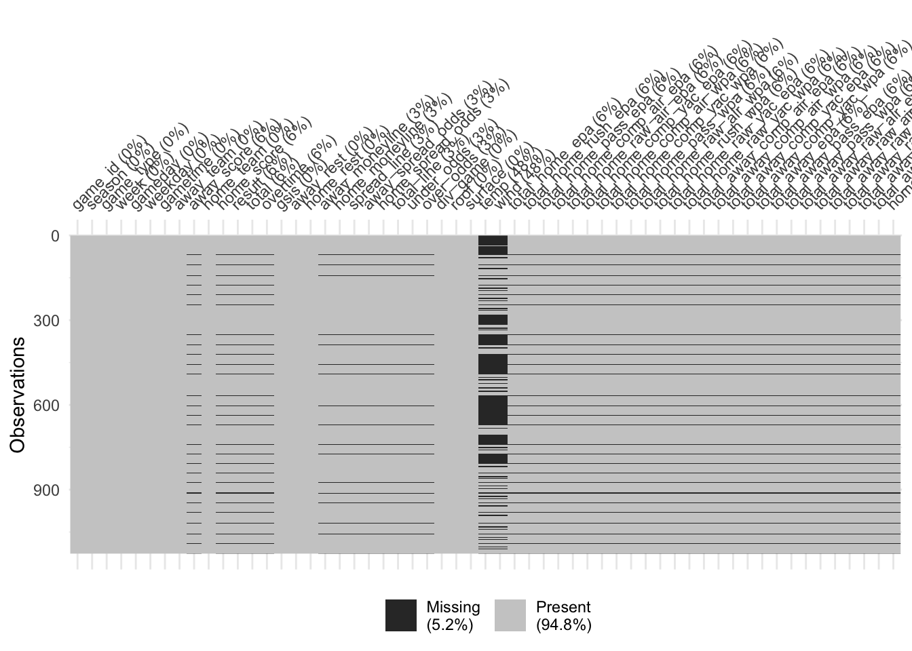
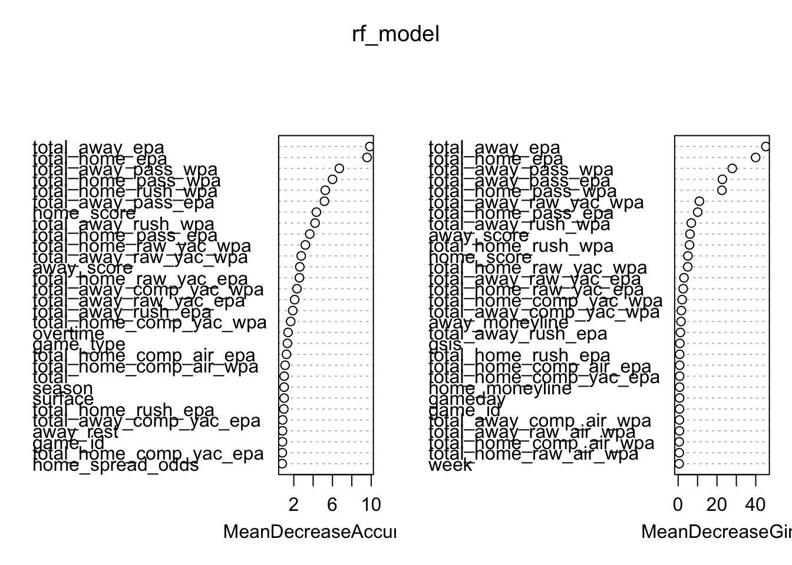
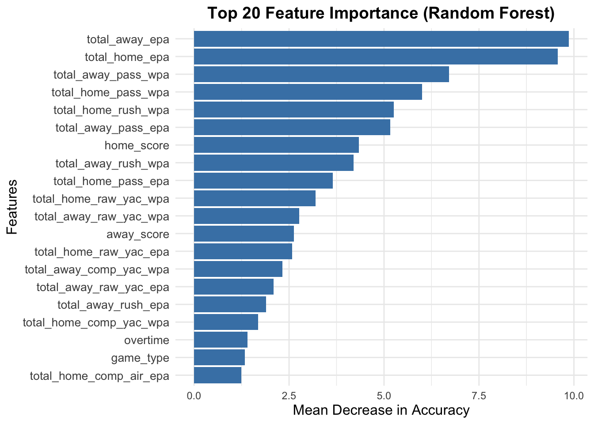
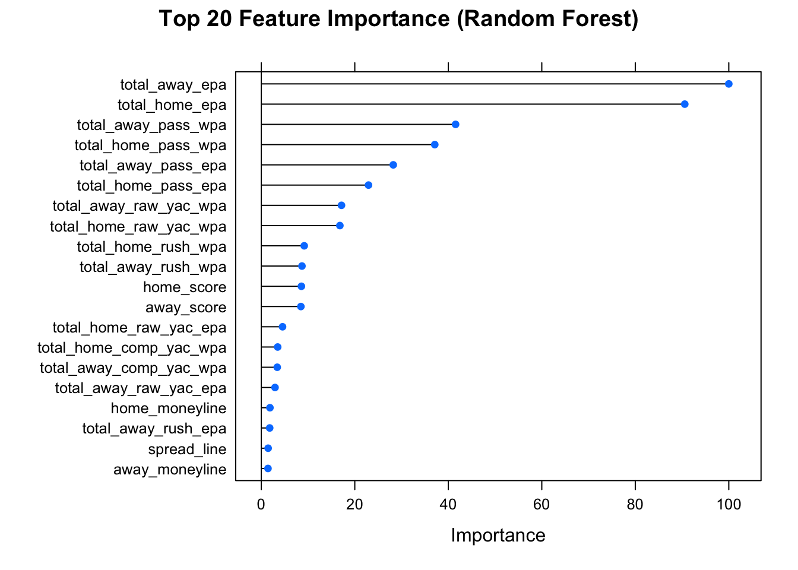

games <- nflreadr::load_schedules(2021:2024)
pbp <- load_pbp(2021:2024)
performances <- pbp %>%
group_by(game_id) %>%
slice_tail(n=1)%>%
select(game_id, total_home_epa, total_home_rush_epa, total_home_pass_epa, total_home_comp_air_epa, total_home_raw_air_epa, total_home_comp_yac_epa, total_home_comp_air_wpa, total_home_comp_yac_wpa, total_home_pass_wpa, total_home_raw_air_wpa, total_home_rush_wpa, total_home_raw_yac_epa, total_home_raw_yac_wpa, total_away_comp_air_epa, total_away_comp_air_wpa, total_away_comp_yac_epa, total_away_comp_yac_wpa, total_away_epa, total_away_pass_epa, total_away_pass_wpa, total_away_raw_air_epa, total_away_raw_air_wpa, total_away_raw_yac_epa, total_away_raw_yac_wpa, total_away_rush_epa, total_away_rush_wpa)
games <- games %>% left_join(performances, by = 'game_id')
games <- games %>%
select(-old_game_id, -nfl_detail_id, -pfr, -pff, -espn, -ftn, -away_qb_id, -home_qb_id, -away_qb_name, -home_qb_name, -away_coach, -home_coach, -referee, -stadium, -stadium_id, -location)
games$home_win <- ifelse(games$result > 0, 1,0)
games <- games %>%
arrange(home_team)christina_model
vis_miss(games)
# Check for missing values in the entire dataset
colSums(is.na(games)) game_id season game_type
0 0 0
week gameday weekday
0 0 0
gametime away_team away_score
0 0 63
home_team home_score result
0 63 63
total overtime gsis
63 63 0
away_rest home_rest away_moneyline
0 0 34
home_moneyline spread_line away_spread_odds
34 34 34
home_spread_odds total_line under_odds
34 34 34
over_odds div_game roof
34 0 0
surface temp wind
0 535 535
total_home_epa total_home_rush_epa total_home_pass_epa
63 63 63
total_home_comp_air_epa total_home_raw_air_epa total_home_comp_yac_epa
63 63 63
total_home_comp_air_wpa total_home_comp_yac_wpa total_home_pass_wpa
63 63 63
total_home_raw_air_wpa total_home_rush_wpa total_home_raw_yac_epa
63 63 63
total_home_raw_yac_wpa total_away_comp_air_epa total_away_comp_air_wpa
63 63 63
total_away_comp_yac_epa total_away_comp_yac_wpa total_away_epa
63 63 63
total_away_pass_epa total_away_pass_wpa total_away_raw_air_epa
63 63 63
total_away_raw_air_wpa total_away_raw_yac_epa total_away_raw_yac_wpa
63 63 63
total_away_rush_epa total_away_rush_wpa home_win
63 63 63 # Specifically check the `home_win` column
sum(is.na(games$home_win))[1] 63# Remove Rows with Missing Values
games <- games %>% drop_na()
games <- games %>%
mutate(across(where(is.numeric), ~ ifelse(is.na(.), mean(., na.rm = TRUE), .)))
games <- games %>%
mutate(across(where(is.factor), ~ ifelse(is.na(.), "Unknown", .)))# Check for missing values again
colSums(is.na(games)) game_id season game_type
0 0 0
week gameday weekday
0 0 0
gametime away_team away_score
0 0 0
home_team home_score result
0 0 0
total overtime gsis
0 0 0
away_rest home_rest away_moneyline
0 0 0
home_moneyline spread_line away_spread_odds
0 0 0
home_spread_odds total_line under_odds
0 0 0
over_odds div_game roof
0 0 0
surface temp wind
0 0 0
total_home_epa total_home_rush_epa total_home_pass_epa
0 0 0
total_home_comp_air_epa total_home_raw_air_epa total_home_comp_yac_epa
0 0 0
total_home_comp_air_wpa total_home_comp_yac_wpa total_home_pass_wpa
0 0 0
total_home_raw_air_wpa total_home_rush_wpa total_home_raw_yac_epa
0 0 0
total_home_raw_yac_wpa total_away_comp_air_epa total_away_comp_air_wpa
0 0 0
total_away_comp_yac_epa total_away_comp_yac_wpa total_away_epa
0 0 0
total_away_pass_epa total_away_pass_wpa total_away_raw_air_epa
0 0 0
total_away_raw_air_wpa total_away_raw_yac_epa total_away_raw_yac_wpa
0 0 0
total_away_rush_epa total_away_rush_wpa home_win
0 0 0 # Split the dataset into training and testing sets
set.seed(666)
train_index <- createDataPartition(games$home_win, p = 0.8, list = FALSE)
train_data <- games[train_index, ]
test_data <- games[-train_index, ]
# Separate predictors and target variable
x_train <- train_data %>% select(-home_win, -result)
y_train <- train_data$home_win
x_test <- test_data %>% select(-home_win, -result)
y_test <- test_data$home_win# Train the Random Forest model
rf_model <- randomForest(
x = x_train,
y = factor(y_train), # Target variable as factor
ntree = 100, # Number of trees
importance = TRUE, # Calculate feature importance
proximity = TRUE # Proximity measure (optional, useful for visualization)
)
# View the model summary
print(rf_model)
Call:
randomForest(x = x_train, y = factor(y_train), ntree = 100, importance = TRUE, proximity = TRUE)
Type of random forest: classification
Number of trees: 100
No. of variables tried at each split: 7
OOB estimate of error rate: 1.48%
Confusion matrix:
0 1 class.error
0 215 2 0.00921659
1 5 251 0.01953125# Predict on the test data
rf_predictions <- predict(rf_model, newdata = x_test)
# Confusion Matrix
conf_matrix <- confusionMatrix(
factor(rf_predictions),
factor(y_test),
positive = "1"
)
print(conf_matrix)Confusion Matrix and Statistics
Reference
Prediction 0 1
0 39 3
1 1 75
Accuracy : 0.9661
95% CI : (0.9155, 0.9907)
No Information Rate : 0.661
P-Value [Acc > NIR] : 3.467e-16
Kappa : 0.9253
Mcnemar's Test P-Value : 0.6171
Sensitivity : 0.9615
Specificity : 0.9750
Pos Pred Value : 0.9868
Neg Pred Value : 0.9286
Prevalence : 0.6610
Detection Rate : 0.6356
Detection Prevalence : 0.6441
Balanced Accuracy : 0.9683
'Positive' Class : 1
# Accuracy
accuracy <- conf_matrix$overall["Accuracy"]
cat("Test Accuracy:", accuracy, "\n")Test Accuracy: 0.9661017 # Feature importance plot
importance <- importance(rf_model)
varImpPlot(rf_model)
library(ggplot2)
# Extract feature importance
importance <- importance(rf_model)
importance_df <- as.data.frame(importance)# Check column names
colnames(importance_df)[1] "0" "1" "MeanDecreaseAccuracy"
[4] "MeanDecreaseGini" # Remove columns with NA names
importance_df <- importance_df[, !is.na(colnames(importance_df))]# Check column names after removal
colnames(importance_df)[1] "0" "1" "MeanDecreaseAccuracy"
[4] "MeanDecreaseGini" # Sort by MeanDecreaseAccuracy
importance_df <- importance_df %>%
arrange(desc(MeanDecreaseAccuracy))# Create a data frame from the importance object with feature names
importance_df <- as.data.frame(importance)
# Add feature names as a proper column
importance_df$Feature <- rownames(importance_df)
# Reset row names to avoid confusion
rownames(importance_df) <- NULL
# Verify the structure of the data
head(importance_df) 0 1 MeanDecreaseAccuracy MeanDecreaseGini Feature
1 0.6021192 0.83724084 0.82706800 0.68483859 game_id
2 1.0050378 0.00000000 1.00503782 0.03428571 season
3 1.3725490 0.00000000 1.34096493 0.23621144 game_type
4 0.8402002 -0.78072566 0.03581176 0.51780202 week
5 0.0774899 -0.29568224 -0.20816481 0.70805781 gameday
6 -0.5326039 0.01175535 -0.29888718 0.18980764 weekday# Limit the number of features to top 20 for better visibility
top_features <- importance_df %>%
top_n(20, wt = MeanDecreaseAccuracy)
# Create the improved plot with ggplot2
library(ggplot2)
ggplot(top_features, aes(x = reorder(Feature, MeanDecreaseAccuracy), y = MeanDecreaseAccuracy)) +
geom_bar(stat = "identity", fill = "steelblue") +
coord_flip() + # Flip axes for better readability
labs(
title = "Top 20 Feature Importance (Random Forest)",
x = "Features",
y = "Mean Decrease in Accuracy"
) +
theme_minimal() +
theme(
axis.text.y = element_text(size = 10), # Increase y-axis font size
axis.title = element_text(size = 12),
plot.title = element_text(size = 14, hjust = 0.5, face = "bold")
)
# Ensure x_train and x_test are data frames
x_train_df <- as.data.frame(x_train)
x_test_df <- as.data.frame(x_test)# Ensure y_train is a factor
y_train <- as.factor(y_train)
# Ensure y_test is a factor
y_test <- as.factor(y_test)# Define training control
train_control <- trainControl(
method = "cv", # Cross-validation
number = 5, # Number of folds
search = "random" # Random search for hyperparameters
)# Check class of x_train_df
class(x_train_df) # Should return "data.frame"[1] "data.frame"# Check for missing values
sum(is.na(x_train_df)) # Should return 0[1] 0# Check class of y_train
class(y_train) # Should return "factor"[1] "factor"# Check dimensions
nrow(x_train_df) == length(y_train) # Should return TRUE[1] TRUE# Check for conflicts
# conflicts()
# Explicitly use caret's train function
tuned_rf_model <- caret::train(
x = x_train_df,
y = y_train, # Ensure this is a factor
method = "rf",
trControl = train_control,
tuneLength = 5
)# Print tuned model results
print(tuned_rf_model)Random Forest
473 samples
55 predictor
2 classes: '0', '1'
No pre-processing
Resampling: Cross-Validated (5 fold)
Summary of sample sizes: 377, 379, 379, 379, 378
Resampling results across tuning parameters:
mtry Accuracy Kappa
8 0.9830678 0.9658901
40 0.9809183 0.9615539
43 0.9809183 0.9615539
52 0.9809183 0.9615539
Accuracy was used to select the optimal model using the largest value.
The final value used for the model was mtry = 8.# Predict on the test set
rf_predictions <- predict(tuned_rf_model, newdata = x_test_df)
# Evaluate the predictions
conf_matrix <- confusionMatrix(rf_predictions, y_test)
print(conf_matrix)Confusion Matrix and Statistics
Reference
Prediction 0 1
0 39 3
1 1 75
Accuracy : 0.9661
95% CI : (0.9155, 0.9907)
No Information Rate : 0.661
P-Value [Acc > NIR] : 3.467e-16
Kappa : 0.9253
Mcnemar's Test P-Value : 0.6171
Sensitivity : 0.9750
Specificity : 0.9615
Pos Pred Value : 0.9286
Neg Pred Value : 0.9868
Prevalence : 0.3390
Detection Rate : 0.3305
Detection Prevalence : 0.3559
Balanced Accuracy : 0.9683
'Positive' Class : 0
# Feature importance
varImp <- varImp(tuned_rf_model)
# Plot feature importance
plot(varImp, top = 20, main = "Top 20 Feature Importance (Random Forest)")
# ## Logistic Regression
#
# # Select and preprocess relevant features
# logistic_data <- nfl_data %>%
# filter(!is.na(epa)) %>%
# select(
# result, epa, home_wp, away_wp, quarter_seconds_remaining,
# roof, play_type
# )
#
# # One-hot encode categorical variables
# logistic_data <- logistic_data %>%
# mutate(
# roof = as.factor(roof),
# play_type = as.factor(play_type)
# ) %>%
# dummy_cols(select_columns = c("roof", "play_type"), remove_first_dummy = TRUE)
#
# # Split into training and testing sets
# set.seed(123)
# split <- createDataPartition(logistic_data$result, p = 0.8, list = FALSE)
# train_data <- logistic_data[split, ]
# test_data <- logistic_data[-split, ]
#
# # Extract predictors and target variable
# x_train <- train_data %>% select(-result)
# y_train <- as.numeric(train_data$result > 0) # Binary win/loss
# x_test <- test_data %>% select(-result)
# y_test <- as.numeric(test_data$result > 0)# # Fit the logistic regression model
# logistic_model <- glm(y_train ~ ., data = cbind(y_train, x_train), family = "binomial")
#
# # Summary of the model
# summary(logistic_model)# # Predict probabilities
# pred_probs <- predict(logistic_model, newdata = x_test, type = "response")
#
# # Convert probabilities to binary predictions
# predicted_classes <- ifelse(pred_probs > 0.5, 1, 0)
#
# # Confusion matrix
# library(caret)
# confusionMatrix(
# factor(predicted_classes),
# factor(y_test),
# positive = "1"
# )
#
# # Evaluate accuracy
# accuracy <- mean(predicted_classes == y_test)
# cat("Test Accuracy:", accuracy, "\n")# # Exponentiate coefficients to get odds ratios
# exp(coef(logistic_model))
#
# # Confidence intervals for odds ratios
# exp(confint(logistic_model))# ## NN
#
# # Select relevant features
# nfl_data <- nfl_data %>%
# filter(!is.na(epa)) %>%
# select(
# game_id, play_type, epa, home_team, away_team, roof, weather,
# home_wp, away_wp, quarter_seconds_remaining, posteam, defteam, result
# )
#
# # One-hot encode categorical variables
# nfl_data <- nfl_data %>%
# mutate(
# roof = as.factor(roof),
# play_type = as.factor(play_type),
# posteam = as.factor(posteam),
# defteam = as.factor(defteam)
# ) %>%
# dummy_cols(select_columns = c("roof", "play_type", "posteam", "defteam"))
#
# # Split into training and testing sets
# set.seed(123)
# split <- createDataPartition(nfl_data$result, p = 0.8, list = FALSE)
# train_data <- nfl_data[split, ]
# test_data <- nfl_data[-split, ]
#
# # Scale numerical features
# scale_features <- function(df) {
# num_cols <- sapply(df, is.numeric)
# df[, num_cols] <- scale(df[, num_cols])
# return(df)
# }
# train_data <- scale_features(train_data)
# test_data <- scale_features(test_data)
#
# # Extract predictors and target variable
# x_train <- train_data %>% select(-result)
# y_train <- train_data$result
# x_test <- test_data %>% select(-result)
# y_test <- test_data$result# # Convert data to matrices
# x_train <- as.matrix(x_train)
# x_test <- as.matrix(x_test)
# y_train <- as.numeric(y_train > 0) # Convert to binary (win/loss)
# y_test <- as.numeric(y_test > 0)
#
# # Define the neural network model
# model <- keras_model_sequential() %>%
# layer_dense(units = 128, activation = "relu", input_shape = ncol(x_train)) %>%
# layer_dropout(rate = 0.3) %>%
# layer_dense(units = 64, activation = "relu") %>%
# layer_dropout(rate = 0.2) %>%
# layer_dense(units = 1, activation = "sigmoid") # Binary classification
#
# # Compile the model
# model %>% compile(
# optimizer = "adam",
# loss = "binary_crossentropy",
# metrics = c("accuracy")
# )
#
# # Train the model
# # Does not run, keep showing `reticulate::py_last_error()` on my end
# #history <- model %>% fit(
# # x_train, y_train,
# # epochs = 50,
# # batch_size = 32,
# # validation_split = 0.2,
# # verbose = 1
# #)